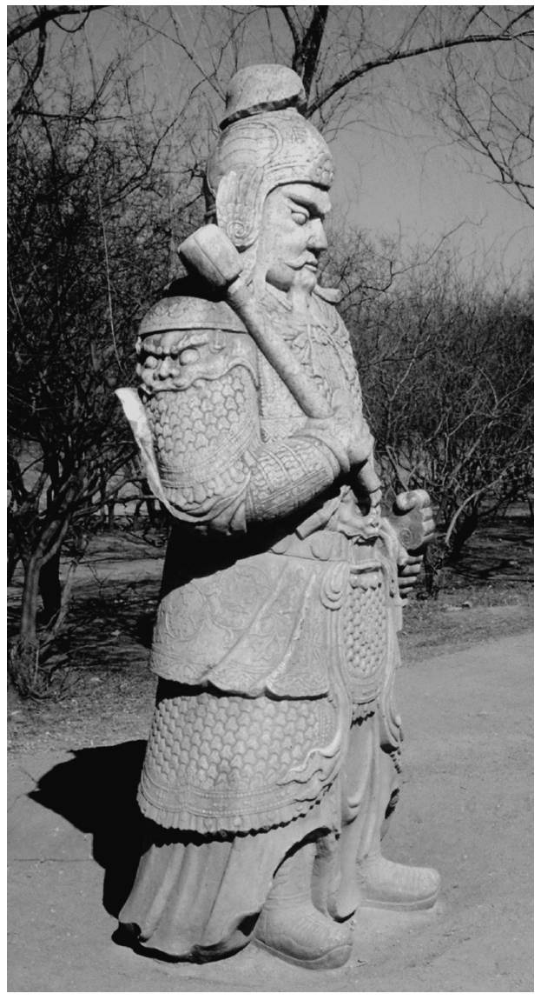

从推翻蒙古人的统治到共和国的出现，明（1368—1644年）、清（1644—1911年）两朝统治了中国500多年。这几个世纪构成了人类历史上治理有序、社会稳定的一个伟大时期。出现这一少有的持久稳定局面的主要原因是，一种被称为“理学”的新的儒家玄学占据了绝对统治地位。这种儒家思想的复兴，主要发生在唐朝灭亡后的混乱时期；那时，时代所需要的东西显然超出死记硬背儒家经典的范围，因此，许多学者着手彻底地重新评价人类和宇宙的问题。
从事这项工作的主要人物是朱熹（1130—1200年），他年轻时曾研究过佛教和道教。由于对这两者都不满意，他转而又研究儒家经典。凭借其非凡的综合才能，他做出了把佛教和道教的成分与儒家学说结合在一起的一种解释，一种更令人满意、更切合他那个时代的解释。他的方法基本上是经验主义的唯理论者的方法。他教导说，宇宙受自由法则的支配，这一点应该得到理解和尊重。他还相信人的善良及其可完善性；把人比作一面落满灰尘的镜子，一旦抹去灰尘，将和过去一样明亮。因此，邪恶是疏忽和教育有缺陷的结果，是可以纠正的。
朱熹对中国儒教世界的影响，可与托马斯·阿奎那对西方基督教世界的影响相比。恰如阿奎那很快将亚里士多德和圣保罗的哲学编入正式的经院哲学那样，朱熹把当时中国人的思想融入理学。和阿奎那一样，朱熹以其无所不包、令人信服的思想，进一步阻止了哲学的发展。明朝时期尤其如此，作为一种反对外来的前蒙古人统治的反应，当时存在着明显的民族优越感和对过去传统的回顾。在这种气氛中，朱熹渐渐被认为是最终的、绝对的权威。“自哲学家朱熹的时代以来，”明朝一位学者说，“真理对世人来说已是显而易见的。我们不再需要什么著作，要做的只是实践。”[3]
自朱熹评注的儒家经典成为文职人员考试的根据以后，理学成为直到19世纪末叶以前帝国官方的正统观念。其结果是为不断增长的社会僵化提供了其所以存在的一个学术性理由。虽然这一理由从根本上有助于独特而历史久远的中国文明的延续，但其代价却是形成了压制外界所有的独创性和新观念、显得荒谬可笑的因循守旧。
中国社会的稳定不仅归因于理学，也归因于所谓的贵族统治阶级的顽固势力——一股在以农业为基础的官僚帝国中同时占有土地和官职的势力。作为地主和放债者，贵族控制着乡村和城镇的经济生活。土地和资本的稀缺使他们能强行抬高租金和利率；频繁的自然灾害使破产的受押人实际上成为当地贵族家庭的契约农奴。明朝后期，拥有几千家这类契约农户的贵族家庭屡见不鲜。
这些贵族还拥有一定的社会地位，的确，这就是中国“贵族”一词所表示的含义。实际上，拥有土地是先决条件，它能为多年的学习提供必需的资金，使学习者成为社会地位的拥有者，获得在官僚机构中谋一席职位的合格条件。因此，地方贵族和帝国官僚之间的联系是非常密切且互相支持的。新到一个省份任职的政府官员，时常发现当地的方言很难懂，这时只得完全依靠当地贵族的指点和引导。
明清两代的中国是由官僚和贵族——如果能对这两者作富有意义的区分的话——共同统治的。帝国当局和地方贵族都对维持于彼此有利的现状十分感兴趣，他们为此而合作。较早时候的一些王朝偶尔试图强行重新分配土地，或进行其他类似的改革，而明清统治者却小心地避免向贵族对农村的控制提出任何挑战。
对比起来，发人深省、颇有意义的是，明朝政府率先控制和约束商人阶层。这是中国社会与西方社会之间一个根本的、最有意义的差别。在西方，正如下章将提到的，资产阶级从一开始就享有相当大的自治权，而且能随着时间的推移增强这种自治权。在中国，的确存在着相应的商人阶层，他们在宋朝才享受到真正的商业革命的益处。此外，中世纪主要的技术发明大多数出自中国。然而，不像在西方，商业革命和技术进步都未给中国带来彻底改变社会的革命性影响。其根本原因，就如第八章第五节所述，在于中国历史的持续性，即隋朝实质上是汉朝的延续，唐、宋又是隋朝的延续，如此下去，连续不断，直到1911年帝国历史结束。因此，传统的官僚贵族统治集团，在理学的一些观念的支持下，能消减或减弱新技术和经济发展的作用。但是，在西方，罗马帝国灭亡之后没有后继者，相反，出现了一种新的多元化的文明；在这一文明中，火药、指南针、印刷术和远洋船只不是被埋没，而是得到充分利用，首先对欧洲，然后对包括中国在内的整个世界，产生了爆炸性的影响。
中国稳定的根源
中国文明的古老和稳定总是给外国观察家们留下深刻的印象。19世纪中期在中国任职的英国领事官员T.T. 梅多斯，根据第一手观察资料做出如下解释。*
中华民族作为同一个民族，其历史空前悠久，人口不断增长……其真正原因可以归结为三个信条和一种制度……这三个信条是：
1. 必须靠道义的作用而不是靠物质力量来治国。
2. 让最贤能的人为国家效力是妥善治理国家所必需的。
3. 如果君主道德败坏、肆意放纵自己，从而导致高压的暴政，那么人民有权废黜这样的君主。
一种制度是：
公职竞争考试的制度［科举制］……
（严格地说来，长期以来一直是竞争性的）公职考试制度是中华民族绵延不绝的原因：正是这种考试制度维护了其他一些事业，并使这些事业能有效地进行下去。全国凡是当父母的，都能理解这种考试制度的用意，所以，这种考试制度诱使父母们向自己的儿子们传授文学的基本知识，其中包括以上所引用的三个信条，以及有利于培养较高精神境界的其他许多知识。通过这种考试制度，所有贤能的人都被招募到小心地保持考试制度纯洁性的政府中来。这种考试制度十分公正，因此，即使是国家中最贫穷的人，也只能说，如果他命运不济，那是“天意”如此，他的同胞们并没有设置任何不公正的障碍来阻挠他的提升……
通常的中国政府基本上是建立在道德力量的基础上：它不是一个专制政府。它所维持的军队和警察，无论在人数上还是在事实上，仅够镇压派别叛乱，而完全不足以镇压一个表示厌恶的、愤怒的民族。但是，尽管这一政府并不实施暴政，但它在形式上和机制上却是一个纯粹的独裁政府。在一个地区内，地方行政官是专制独裁的；在一个省里，总督是专制独裁的；在帝国中，皇帝是专制独裁的。民众没有立法权，没有自行收税的权利，没有投票使统治者落选的权利，也没有限制或者停止政府开支的权利。因此，他们有造反的权利。造反在中国是阻止专断的、邪恶的立法和行政的一种古老的、时常运用的符合宪法的正当手段。
* T. T. Meadows, The Chinese and Their Rebellions（Smith, Elder, 1856）, pp. 23，24，401-403.
这种爆炸性的影响，在中国是不可能产生的，因为这里的帝国机构太封闭、约束力太强。例如，中国的商人和实业家通常加入以行会头领为首的地方行会。但是，这些行会头领需要得到政府的许可证明，并奉命负责每个行会成员的经营。船商也在港口首领的领导下组织起来，这些港口首领同样需对政府负责。更重要的是，政府垄断了供朝廷和行政机构消费的许多商品的生产和分配，这些商品包括武器、纺织品、陶器、皮革制品、服装和酒等。另外，政府还完全控制了全体人民所必需的基本商品的生产和分配，如盐和铁等。这些限制剥夺了中国商人创建自由企业的机会，束缚了经济的发展；同时，也助长了官员的腐化和堕落，因为朝廷官员可以利用他们的特权地位，操纵国家垄断商品为个人牟利。

图96 中国将军石像。它是北京城外通往明朝皇陵的墓道两旁的一些护卫石像中的一尊。
中国统治集团限制性的内向政策的另一实例是竭力反对海外经营。中国移民在欧洲人到达之前，已慢慢迁移到东南亚。在菲律宾，西班牙人可能任何时候都没有中国人多。1603年，在西班牙殖民地马尼拉建立32年后，这里的中国人大约有2万人，而西班牙人大概只有1000人。这些中国人实际上控制了殖民地的经济生活，并将其控制范围扩大到这一群岛的其他岛屿上。正是这一年，1603年，马尼拉的中国人遭到一次大屠杀；相距不远的中国福建省的一位官员却宽恕了这一屠杀，并谴责所有的海外中国人都是抛弃祖先坟墓的人，是不值得皇帝关心的人。同样，1712年，皇帝颁布了一条敕令，禁止中国人在东南亚经商和定居。五年后，另一条敕令允许那些已定居国外的中国人返回家乡，不必担心受到惩罚。1729年，又颁布一条法令，规定了回国的具体日期，逾期未归的那些海外中国人将不许回国。这一中国政策同西方政策形成了何等鲜明的对照。西方国家不久就积极开辟海外殖民地，创立贸易公司，甚至随时准备着用武力保卫这些事业，反对任何威胁。
15世纪早期明朝航海业的异乎寻常的历史，提供了中国官方对海外活动抱消极态度的最富戏剧性的实例。这些航海其范围惊人，显示了确实证明中国在世界航海业中居领先地位的技术优势。随之而来的是，皇帝下达的禁止进一步海外探险的命令和官方对这一命令的立即执行（见第九章第一节）。
虽然皇帝下禁海诏书的确切动机无人知晓，但以下事实值得注意：皇帝之所以能颁布禁海令，仅仅是因为中国商人缺乏西方商人所拥有的政治权力和社会地位。正是体制结构和向外拓展的动力方面的根本差别，在世界历史的这一重要转折关头，使中国的力量转向内部，将全世界海洋留给了西方的冒险事业。由此，不可避免的结局是伟大的“天朝”在数世纪内黯然失色，而西方蛮族此时却崭露头角。